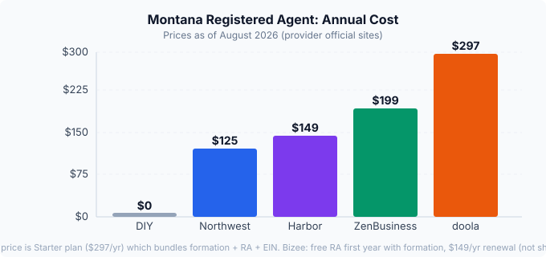

Registered Agent in Montana Cost (2026): DIY vs Services Compared
Short answer: A Montana registered agent costs $0 if you serve yourself (risky) or $99 to $297 per year if you hire a service. Montana requires every LLC to maintain a registered agent with a physical Montana street address. Most first-time founders pay for a professional service to avoid missed lawsuits and keep their home address off public records. Northwest Registered Agent charges a flat $125/year with no hidden fees; doola bundles a registered agent with its $297/year Starter formation package.
Last updated: 2026-08-23

Does my Montana LLC need a registered agent?
Yes. Montana law requires every LLC to designate a registered agent when you file your Articles of Organization with the Secretary of State. You cannot form a Montana LLC without naming one. The agent serves as the official point of contact for legal documents, tax notices, and service of process.
This is not optional and not a one-time setup. Your registered agent must stay active for the entire life of your LLC. If your agent resigns or your address goes invalid, you have 30 days to replace them or the state can administratively dissolve your company.
Can I be my own registered agent in Montana?
Technically, yes. Montana lets any individual who is at least 18 years old and has a physical Montana street address serve as their own LLC's registered agent. You do not need to be a Montana resident, but you do need a physical address in the state (no P.O. boxes) and must be available at that address during normal business hours.
The catch: your registered agent address goes on public record with the Montana Secretary of State. If you use your home address, anyone who searches the state database can find it. And you must be physically present during business hours to accept service of process in person. Miss a delivery, and a lawsuit can proceed without your knowledge.
DIY saves money but introduces three real risks:
- Privacy. Your home address becomes part of the public record.
- Missed service. If you are not at the address when a process server arrives, the court can proceed without you.
- Availability. You must be at that address during business hours, every business day, or have someone else there who can accept documents.
For a solo founder working from home in Montana, the risk profile is different than for someone running a remote business from out of state. If you live in Montana and work from a dedicated office, DIY is a legitimate option. If you travel frequently or want to keep your home address private, a registered agent service is worth the annual fee.
What does a registered agent service cost in Montana?
Here is what you pay at each major provider as of August 2026. These are the registered-agent-only prices (not formation bundles) unless noted otherwise.
| Service | Annual cost | First year | Key details |
|---|---|---|---|
| Northwest Registered Agent | $125 | $125 | Flat rate, no hidden fees. Includes business address, mail scanning, free domain and website. |
| Harbor Compliance | $149 | $99 | First-year discount. Same-day document delivery, Entity Manager software. |
| ZenBusiness | $199 | $99 | First-year discount with formation package. Document scanning, email alerts, compliance reminders. |
| Bizee (Incfile) | $149 | Free with formation | Free RA bundled with LLC formation. Annual report reminders, document scanning. |
| doola | $297 | $297 (bundled) | Registered agent included in Starter plan ($297/yr). Also covers EIN, business address, formation filing. |
Northwest is the cheapest standalone registered agent in Montana at $125 flat. Harbor Compliance and ZenBusiness offer first-year discounts that beat that number, but their renewals run higher. Bizee bundles a free first year with formation, which makes sense if you are forming and need an agent at the same time. doola's price looks higher, but it includes formation, EIN, and a US business address in the Starter plan, so the total cost of getting set up is competitive.
What happens if my agent misses a lawsuit?
This is the scenario that makes the registered agent question matter. If a process server cannot find your agent or your agent fails to forward service of process documents:
- A court can enter a default judgment against your LLC.
- Your LLC can lose its good standing with the Montana Secretary of State.
- The state can administratively dissolve your LLC.
- You can lose your personal liability protection, meaning creditors may come after your personal assets.
Montana allows a 30-day window to replace a resigned registered agent. But the real danger is the gap between when the old agent stops working and the new one is in place. A professional service eliminates this gap because they maintain a staffed office with someone available during all business hours.
What about Montana's annual report and registered agent?
Montana requires LLCs to file an annual report between January 1 and April 15 each year. File during that window and there is no filing fee. File after April 15 and you pay a $15 late fee. The annual report is also the easiest time to change your registered agent -- just update the agent section when you file, no separate fee. Outside the annual report window, you file a Statement of Change form online, also free.
Can I change my Montana registered agent later?
Yes. You have two options, both free:
- During the annual report (January 1 to April 15). No fee, no separate filing.
- Statement of Change form. File online through the Montana Secretary of State's Enterprise Online Filing Portal. No fee.
The new agent must meet Montana's requirements: a physical Montana street address, available during normal business hours, at least 18 years old if an individual, or authorized to do business in Montana if a company.
Which Montana registered agent should I pick?
It depends on what you need right now:
- Cheapest standalone agent: Northwest Registered Agent at $125/year flat. No price hikes on renewal, no hidden fees. Best if you already have your LLC formed and just need an agent.
- Best value if you are also forming: doola at $297/year bundles formation, registered agent, EIN, and a US business address into one package. Good for first-time founders who want everything handled in one place.
- Cheapest first year: Bizee (free RA with formation) or ZenBusiness at $99 first year. Both renew higher, so check the long-term cost if you plan to stay for several years.
Year-one cost breakdown for a Montana LLC
Here is what you actually pay in year one, including Montana's state filing fee and a registered agent:
| Cost component | Amount | Notes |
|---|---|---|
| Montana LLC filing fee | $35 | Online only via Enterprise Online Filing Portal. No paper filings. |
| DIY registered agent | $0 | Risky. Your home address goes on public record. |
| Northwest RA | $125 | Flat rate, first year and renewal. |
| doola Starter (formation + RA + EIN) | $297 | Bundles everything. Good for founders who want it all handled. |
If you form through doola, the $297 covers formation, registered agent, EIN, and a business address. If you form yourself and hire Northwest as your agent, your year-one total is $160 ($35 filing + $125 agent).
Recap checklist
- Montana requires every LLC to have a registered agent with a physical Montana street address.
- You can serve as your own agent, but your home address goes on public record and you must be available during business hours.
- Professional registered agents cost $99 to $297 per year in Montana.
- Northwest Registered Agent is the cheapest standalone option at $125/year.
- doola bundles agent, formation, and EIN in one $297/year package.
- You can change your agent at any time, free, through the annual report or a Statement of Change form.
- Missing a lawsuit because your agent was not available can dissolve your LLC and strip your liability protection.
FAQ
Do I need a physical address in Montana for a registered agent?
Yes. Montana Code 35-7-104 requires the registered office to be an actual street address in the state. P.O. boxes are not accepted. The agent must be present at that address during normal business hours.
Can a non-resident form a Montana LLC?
Yes. You do not need to live in Montana. But you still need a registered agent with a physical Montana address, which usually means hiring a service if you live out of state.
How much does a Montana LLC cost in total for the first year?
The state filing fee is $35. Add a registered agent at $99 to $297 per year. Your total year-one cost ranges from roughly $134 to $332. If you serve as your own agent, the minimum is just the $35 filing fee.
What happens if I don't have a registered agent?
Montana will not approve your Articles of Organization without one. If your agent resigns and you fail to replace them within 30 days, the state can administratively dissolve your LLC.
Is Northwest Registered Agent good for Montana?
Northwest is a strong option. Their flat $125/year rate does not increase on renewal, they provide a physical Montana address, and they scan and forward all documents. For founders who just need a reliable agent without formation services, Northwest is hard to beat.
Does doola include a registered agent with Montana LLC formation?
Yes. doola's Starter plan at $297/year includes LLC formation, a registered agent, an EIN, and a US business address. If you are forming a new Montana LLC and want everything handled in one purchase, doola covers the registered agent piece at no additional cost.
Get our free LLC Formation Checklist
Step-by-step guide: state fees, timelines, EIN process, and the exact paperwork checklist. Used by 200+ founders.
Download Free Checklist